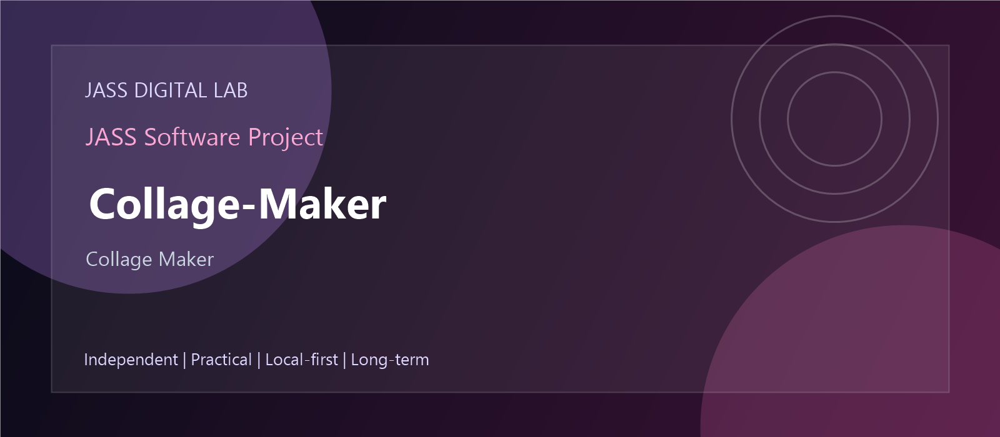

Collage Maker
This project is part of JASS Digital Lab - a practical software laboratory for building, preserving, exploring and modernizing useful digital tools.
The complete source code, documentation and project history are available in the GitHub repository.
Independent software - local-first workflows - reusable components - long-term digital preservation.